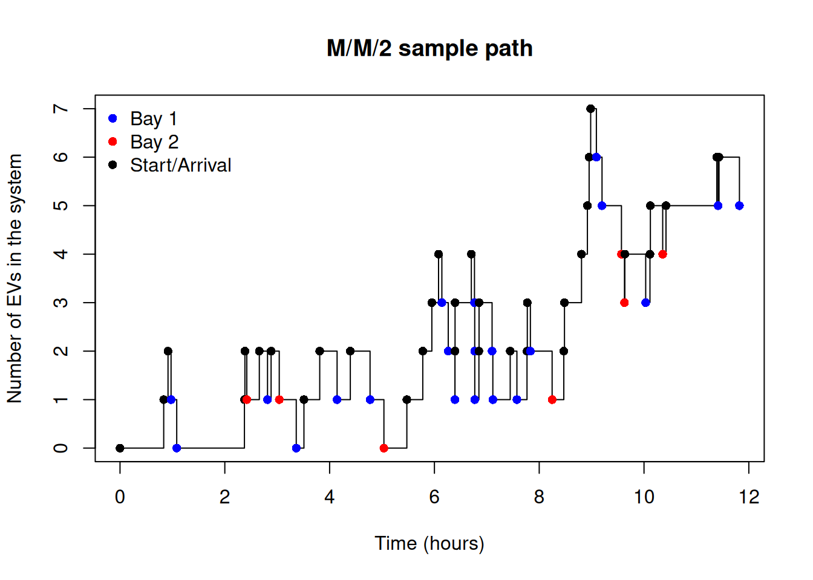

simulate_mmc <- function(lambda, mu, c, sim_time, seed = 1234) {
if (!is.null(seed)) set.seed(seed)
# System state
T <- 0
X <- 0
# Output dataframe
df <- data.frame(
time = 0,
state = 0,
event = "Start",
bay = NA,
start = NA,
end = NA
)
# Next arrival
T_a <- rexp(1, lambda)
# Active services: one row per busy bay
services <- data.frame(
bay = integer(0),
start = numeric(0),
end = numeric(0)
)
while (T < sim_time) {
T_s <- if (nrow(services) > 0) min(services$end) else Inf
if (min(T_a, T_s) > sim_time) break
if (T_a < T_s) {
# Arrival
T <- T_a
X <- X + 1
df <- rbind(
df,
data.frame(
time = T, state = X, event = "Arrival",
bay = NA, start = NA, end = NA
)
)
T_a <- T + rexp(1, lambda)
# Start service immediately if a bay is free
if (X <= c) {
busy <- services$bay
idle <- setdiff(seq_len(c), busy)
srv <- sample(idle, 1) # assign to a random free bay
dur <- rexp(1, mu)
services <- rbind(
services,
data.frame(
bay = srv,
start = T,
end = T + dur
)
)
}
} else {
# Departure
idx <- which.min(services$end)
srv <- services$bay[idx]
s0 <- services$start[idx]
s1 <- services$end[idx]
T <- s1
X <- X - 1
df <- rbind(
df,
data.frame(
time = T, state = X, event = "Departure",
bay = srv, start = s0, end = s1
)
)
# Remove completed service
services <- services[-idx, ]
# If queue non‑empty, same bay starts next service immediately
if (X >= c) {
dur <- rexp(1, mu)
services <- rbind(
services,
data.frame(
bay = srv,
start = T,
end = T + dur
)
)
}
}
}
rownames(df) <- NULL
df
}45 🚗 EV Charging Bays Simulation
Have you ever wondered how many fast-charging bays an electric vehicle (EV) charging station should have to meet the demand of EV drivers? In this section, we will simulate an EV fast-charging station to determine the optimal number of charging bays needed to minimise wait times and maximise customer satisfaction.
Scenario description
Curtin University installs an EV fast‑charging station at yellow car park PI1 next to the John Curtin Gallery (Building 200A). The station has:
- 2 identical DC fast chargers (each up to 75 kW)
- A single queue of EVs; the next free charger takes the next car
- Operating hours: 8:00–20:00 (12 hours per day)
The university wants to know:
- How often do EVs have to wait for a charger?
- What is the average waiting time?
- Are two chargers enough, or should they plan for a third?
Mapping to an M/M/2 model
We model the station as an M/M/2 queue with the following assumptions:
Arrivals (M):
EVs arrive randomly, independently → Poisson process with rate \(\lambda\) (cars/hour).Service times (M):
Charging times are variable (battery level, charger power, user behaviour).
We approximate them as exponential with mean \(1/\mu\) hours.Servers (2):
Two identical chargers → \(c = 2\).Queue discipline:
First‑come, first‑served, single queue.
Suppose the university collects data over several days:
- Over 10 days, 12 hours/day → 120 hours of observation
- They observe 360 EV arrivals
\[ \hat{\lambda} = \frac{360}{120} = 3 \text{ cars/hour} \] - From charger logs, the average charging session is 30 minutes (0.5 hours)
\[ \hat{\mu} = \frac{1}{0.5} = 2 \text{ cars/hour per charger} \]
We’ll use:
- \(\lambda = 3\) cars/hour
- \(\mu = 2\) cars/hour
- \(c = 2\) chargers
Simulating the queue
The following function simulate the M/M/c queue for a given parameter \(\lambda, \mu, c\) and simulation time.
To simulate one-day operation (12 hours) and plot a sample path, run:
df <- simulate_mmc(lambda = 3, mu = 2, c = 2, sim_time = 12, seed = 1234)
df time state event bay start end
1 0.0000000 0 Start NA NA NA
2 0.8339195 1 Arrival NA NA NA
3 0.9161725 2 Arrival NA NA NA
4 0.9742301 1 Departure 1 0.8339195 0.9742301
5 1.0822563 0 Departure 1 0.9161725 1.0822563
6 2.3742858 1 Arrival NA NA NA
7 2.3837866 2 Arrival NA NA NA
8 2.4192606 1 Departure 2 2.3742858 2.4192606
9 2.6584804 2 Arrival NA NA NA
10 2.8149918 1 Departure 1 2.3837866 2.8149918
11 2.8833441 2 Arrival NA NA NA
12 3.0386955 1 Departure 2 2.6584804 3.0386955
13 3.3631426 0 Departure 1 2.8833441 3.3631426
14 3.5100364 1 Arrival NA NA NA
15 3.8113433 2 Arrival NA NA NA
16 4.1426883 1 Departure 1 3.8113433 4.1426883
17 4.3949033 2 Arrival NA NA NA
18 4.7718502 1 Departure 1 4.3949033 4.7718502
19 5.0362654 0 Departure 2 3.5100364 5.0362654
20 5.4739824 1 Arrival NA NA NA
21 5.7779277 2 Arrival NA NA NA
22 5.9510414 3 Arrival NA NA NA
23 6.0788886 4 Arrival NA NA NA
24 6.1421209 3 Departure 1 5.7779277 6.1421209
25 6.2639401 2 Departure 1 6.1421209 6.2639401
26 6.3915144 1 Departure 1 5.4739824 6.3915144
27 6.3923701 2 Arrival NA NA NA
28 6.3937018 3 Arrival NA NA NA
29 6.7043330 4 Arrival NA NA NA
30 6.7645139 3 Departure 1 6.3923701 6.7645139
31 6.7690598 2 Departure 1 6.7645139 6.7690598
32 6.7700541 1 Departure 1 6.2639401 6.7700541
33 6.8491808 2 Arrival NA NA NA
34 6.8518031 3 Arrival NA NA NA
35 7.1003810 2 Departure 1 6.8491808 7.1003810
36 7.1148876 1 Departure 1 7.1003810 7.1148876
37 7.4463008 2 Arrival NA NA NA
38 7.5742028 1 Departure 1 6.7690598 7.5742028
39 7.7669260 2 Arrival NA NA NA
40 7.7726244 3 Arrival NA NA NA
41 7.8314959 2 Departure 1 7.7669260 7.8314959
42 8.2462255 1 Departure 2 7.4463008 8.2462255
43 8.4691512 2 Arrival NA NA NA
44 8.4819445 3 Arrival NA NA NA
45 8.8071861 4 Arrival NA NA NA
46 8.9195164 5 Arrival NA NA NA
47 8.9524676 6 Arrival NA NA NA
48 8.9819807 7 Arrival NA NA NA
49 9.0909073 6 Departure 1 7.8314959 9.0909073
50 9.1986469 5 Departure 1 9.0909073 9.1986469
51 9.5692920 4 Departure 2 8.4691512 9.5692920
52 9.6269596 3 Departure 2 9.5692920 9.6269596
53 9.6338779 4 Arrival NA NA NA
54 10.0319087 3 Departure 1 9.1986469 10.0319087
55 10.1136137 4 Arrival NA NA NA
56 10.1213361 5 Arrival NA NA NA
57 10.3564196 4 Departure 2 9.6269596 10.3564196
58 10.4193172 5 Arrival NA NA NA
59 11.3883852 6 Arrival NA NA NA
60 11.4139295 5 Departure 1 10.0319087 11.4139295
61 11.4317693 6 Arrival NA NA NA
62 11.8210187 5 Departure 1 11.4139295 11.8210187plot(
df$time, df$state,
type = "s",
xlab = "Time (hours)",
ylab = "Number of EVs in the system",
main = "M/M/2 sample path"
)
points(df$time, df$state, pch = 16,
col = ifelse(is.na(df$bay), "black", ifelse(df$bay == 1, "blue", "red")))
legend(
"topleft", bty = "n", pch = 16,
legend = c("Bay 1", "Bay 2", "Start/Arrival"),
col = c("blue", "red", "black"))
# simulate for 250 working days in a year
df <- simulate_mmc(lambda = 3, mu = 2, c = 2, sim_time = 3000, seed = 1234)
lambda <- 3
mu <- 2
c <- 2
# durations spent in each state
durations <- diff(df$time) # time spent in each interval
states <- df$state[-nrow(df)] # state held over each interval
# Empirical performance metrics
rho_hat <- sum((states > 0) * durations) / sum(durations)
L_hat <- sum(states * durations) / sum(durations)
Lq_hat <- L_hat - rho_hat
W_hat <- L_hat / lambda
Wq_hat <- W_hat - 1 / mu
P0_hat <- sum((states == 0) * durations) / sum(durations)
# Theoretical performance metrics
# Erlang-C formula for M/M/c probability of waiting
erlang_c <- function(lambda, mu, c) {
a <- lambda / mu
rho <- lambda / (c * mu)
# denominator: sum_{k=0}^{c-1} a^k/k!
sum_terms <- sum(sapply(0:(c-1), function(k) a^k / factorial(k)))
# numerator term: a^c / (c! * (1 - rho))
top <- (a^c / factorial(c)) * (1 / (1 - rho))
# Erlang C probability
P_wait <- top / (sum_terms + top)
return(P_wait)
}
P_wait <- erlang_c(lambda, mu, c); P_wait[1] 0.6428571rho <- lambda / (c*mu)
Lq_theory <- P_wait * (rho / (1 - rho))
L_theory <- Lq_theory + (lambda / mu)
Wq_theory <- Lq_theory / lambda
W_theory <- Wq_theory + (1 / mu)
P0_mmc <- function(lambda, mu, c) {
a <- lambda / mu
rho <- lambda / (c * mu)
sum_terms <- sum(sapply(0:(c-1), function(k) a^k / factorial(k)))
top <- (a^c / factorial(c)) * (1 / (1 - rho))
P0 <- 1 / (sum_terms + top)
return(P0)
}
P0_theory <- P0_mmc(lambda, mu, c)
data.frame(
Metric = c("Utilisation", "Avg. number in system", "Avg. number in queue",
"Avg. response time", "Avg. waiting time", "System empty probability"),
Simulated = c(rho_hat, L_hat, Lq_hat, W_hat, Wq_hat, P0_hat),
Theoretical = c(rho, L_theory, Lq_theory, W_theory, Wq_theory, P0_theory)
) Metric Simulated Theoretical
1 Utilisation 0.8386470 0.7500000
2 Avg. number in system 3.2362600 3.4285714
3 Avg. number in queue 2.3976131 1.9285714
4 Avg. response time 1.0787533 1.1428571
5 Avg. waiting time 0.5787533 0.6428571
6 System empty probability 0.1613530 0.1428571From the table, we can see that the simulated performance metrics are close to the theoretical benchmarks, which validates our simulation model.
- The system is stable and reasonably well-utilised with \(\rho < 1\).
- Theoretically, the utilisation per charger is around 75% of the time, which suggests that each charger is busy about 75% of the time. The difference between the simulated and theoretical utilisation can be attributed to the randomness in the simulation and the finite simulation time, but reasonable for one trajectory.
- The average number of EVs in the system is between 3 to 4 cars.
- The average number of EVs waiting is around 1 to 2 cars. The simulated value is slightly higher, which is consistent with higher utilisation.
- The average response time (time in system) is around 1 hour.
- The average waiting time before charging is about 0.6 hours (36 minutes).
- The probability that the station is empty (no cars) is around 15%.
Discussion
Answering the original questions:
- How often do EVs have to wait for a charger?
- Answer: The probability of waiting is around 64% (from Erlang C formula), which means that most EVs will have to wait for a charger during busy periods.
- What is the average waiting time?
- Answer:The average waiting time is around 36 minutes, which may be considered long for a fast-charging station. This could lead to customer dissatisfaction during peak hours.
- Are two chargers enough, or should they plan for a third?
- Answer:With two chargers, the utilisation is quite high, and the waiting times are significant. Adding a third charger would reduce the utilisation and significantly decrease waiting times, improving customer satisfaction. The decision to add a third charger would depend on the cost of installation versus the benefits of reduced waiting times and increased customer satisfaction.